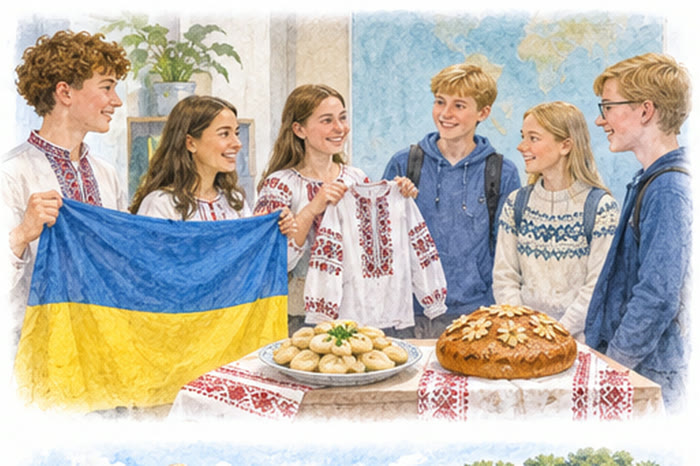

Listen to the text
Speed:

Our school had guests from Finland. They were students of our age, and they had prepared questions about Ukraine. We answered them together. Here are the best ones. "What is the capital?" Kyiv. It is one of the oldest cities in Eastern Europe. It stands on both banks of the Dnipro. "What do the colours of your flag mean?" Blue is the sky, and yellow is a field of wheat. You can see this flag in real life if you go to the countryside in July. "What is your national symbol?" The trident. It is very old. It was used by the princes of Kyiv a thousand years ago. "What is your money called?" The hryvnia. The name is about a thousand years old too. "What do you eat?" Borshch, of course. Varenyky with potatoes, cabbage or cherries. And bread. We respect bread very much. "What is vyshyvanka?" It is an embroidered shirt. Every region has its own patterns and colours. "What are you proud of?" The biggest plane in the world, "Mriia", was built in Ukraine. Our scientists, our sportspeople, our musicians. And our people. "What is the most beautiful place?" We argued for ten minutes. The Carpathians, said half of the class. The sea, said the others. Our teacher said, "Home." "What is the hardest Ukrainian word?" We taught them "palianytsia". They tried for five minutes and laughed. The last question was, "What should we remember about Ukraine?" Our class was silent. Then Demian said, "That we are free people. And that we always have a place at the table for a guest." The Finnish students wrote it down.
Tap any sentence to hear it again.
Сподобалось? На сайті ще більше матеріалів для вчителів!
Reader, презентації, ігри, діагностичні та контрольні роботи до підручників 1-11 класів.
Перейти на сайт materials.allaenglish.com